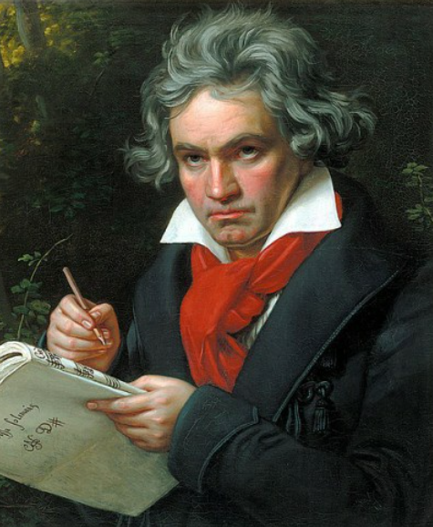

The best musicians
Beethoven, Mozart, Haydn, Bach
Ludwig van Beethoven
A German musician He left several symphonies such as heroes, fate, and chorus, and many great works such as operas and sonatas, so he is called "malicious (adult of music)."Called the "Adult of Music," Beethoven left many great works despite his deafness.
Wolfgang Amadeus Mozart
Austrian musicians He has excellent musical talent since he was young and has published more than 100 works, including symphonies, chamber music, and operas. Leaving behind great works such as Figaro's Marriage, Don Giovanni, and the Magic Flute.
Franz Joseph Haydn
Hugo Wolf Representative of the classical composer and has called
the ‘the father of a symphony’.In addition to teaching music to
Beethoven and Haydn is one of Mozart's musical influence on and to
establishing a classical music.The Four Seasons, the creation,
many for his song.
Johann Sebastian Bach
He was born on 21 March 1685 in Eisenach, Thuringen, Germany, the
eighth son of Johann Ambrogius. Under the influence of his father,
a street musician, he learned violin and organ from an early age.
While performing and conducting in the court orchestra and working
as a church musician, he left many representative songs of baroque
music.
